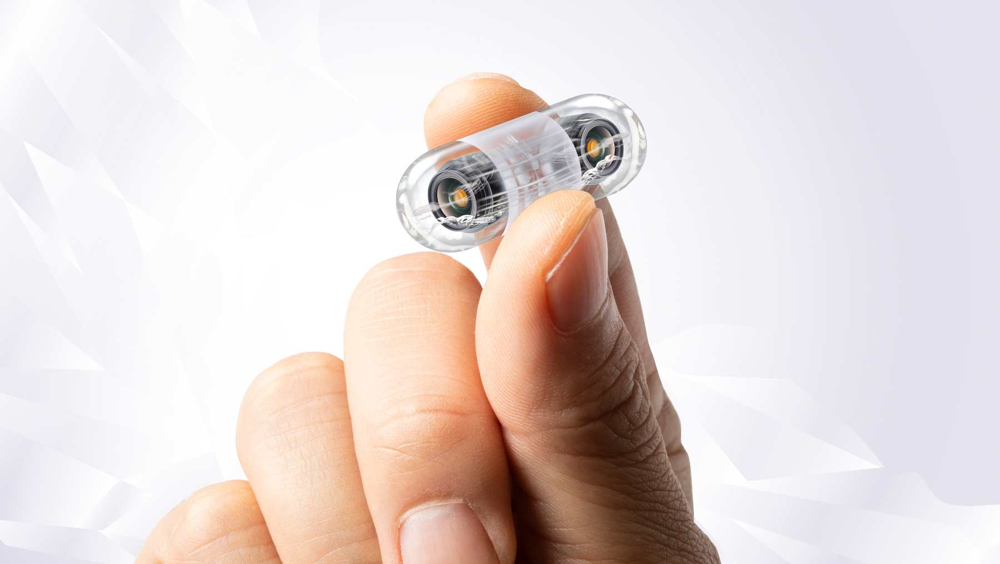
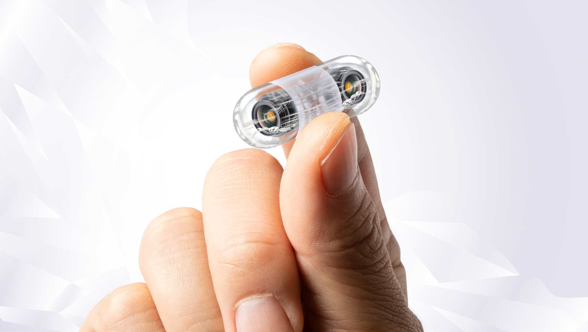

Inicio
La medicina con nanotecnologia es una rama innovadora de la ciencia que utiliza materiales y dispositivos extremadamente pequeños, llamados nanoparticulas, para prevenir, diagnosticar y tratar enfermedades. Esta tecnologia permite trabajar a nivel molecular y celular, lo que mejora la precision y la efectividad de los tratamientos medicos. Gracias a la nanotecnologia, los medicos pueden dirigir medicamentos directamente hacia las celulas enfermas sin dañar las sanas, desarrollar sistemas de diagnostico mas rapidos y crear materiales biocompatibles para reparar tejidos o fabricar organos artificiales. En el futuro, se espera que esta ciencia transforme completamente la manera en que se tratan enfermedades como el cancer, la diabetes y las infecciones, ofreciendo soluciones mas seguras, personalizadas y eficaces.
Información General
La medicina con nanotecnología es una rama avanzada de la ciencia que combina la nanotecnología (el estudio y manipulación de materiales a una escala extremadamente pequeña, del tamaño de los átomos y moléculas) con la medicina, para crear nuevas herramientas y tratamientos destinados a mejorar la salud humana. A continuación, te dejo una explicación clara y completa: Información general sobre la medicina con nanotecnología La nanotecnología médica se enfoca en el uso de nanopartículas y nanodispositivos para diagnosticar, tratar y prevenir enfermedades. Estas partículas son tan pequeñas que pueden interactuar directamente con las células del cuerpo, permitiendo tratamientos más precisos, eficaces y con menos efectos secundarios. Aplicaciones principales 1. Diagnóstico temprano de enfermedades Se utilizan nanosensores para detectar enfermedades como el cáncer en etapas muy iniciales. Pueden identificar virus o bacterias con gran rapidez y exactitud. 2. Tratamientos más eficaces Los nanomedicamentos pueden transportar fármacos directamente a las células enfermas sin afectar las sanas. Esto mejora la efectividad y reduce los daños colaterales en tratamientos como la quimioterapia. 3. Regeneración de tejidos Se desarrollan nanomateriales que ayudan a reparar órganos o tejidos dañados, por ejemplo, en el corazón, piel o huesos. 4. Liberación controlada de medicamentos Las nanopartículas pueden liberar el medicamento poco a poco en el lugar exacto del cuerpo donde se necesita, mejorando su acción. Ventajas de la nanotecnología en la medicina Mayor precisión en diagnósticos y tratamientos. Menos efectos secundarios. Recuperaciones más rápidas. Posibilidad de curar enfermedades antes consideradas incurables.
 

Avances
Avances de la medicina con nanotecnologia La medicina con nanotecnologia ha logrado grandes avances en los ultimos años, cambiando la forma en que se diagnostican y tratan muchas enfermedades. Gracias al desarrollo de materiales y dispositivos a escala nanometrica, los medicos y cientificos pueden trabajar dentro del cuerpo humano con una precision nunca antes vista. Principales avances 1. Nanomedicamentos inteligentes Se han creado particulas diminutas capaces de transportar medicamentos directamente al organo o tejido afectado. Estos nanomedicamentos liberan la dosis necesaria justo donde se necesita, reduciendo los efectos secundarios y aumentando la eficacia del tratamiento. 2. Nanobots o robots microscopicos En el futuro cercano, se estan desarrollando nanorobots que podran circular por el torrente sanguineo para reparar celulas, eliminar bacterias o limpiar arterias bloqueadas. Estos robots tambien podran ayudar a detectar enfermedades antes de que aparezcan los sintomas. 3. Deteccion temprana del cancer Se utilizan nanosensores para identificar celulas cancerigenas en sus primeras etapas. Esto permite un diagnostico rapido y tratamientos mas efectivos. 4. Regeneracion de tejidos y organos Con nanomateriales se han fabricado tejidos artificiales y estructuras que ayudan a que las celulas se regeneren naturalmente, lo cual es muy util en quemaduras, lesiones oseas o problemas cardiacos. 5. Terapias personalizadas La nanotecnologia permite diseñar tratamientos unicos para cada paciente, analizando su ADN y creando medicamentos que se adapten a su organismo.
Futuro
Futuro de la medicina con nanotecnologia El futuro de la medicina con nanotecnologia promete cambiar por completo la forma en que se diagnostican, tratan y previenen las enfermedades. Gracias a los continuos avances en la ciencia, se espera que la nanotecnologia se convierta en una herramienta esencial en la medicina del mañana, ofreciendo tratamientos mas rapidos, precisos y personalizados. Posibles desarrollos a futuro 1. Nanorobots dentro del cuerpo humano Se preve que en el futuro los nanorobots puedan circular por el torrente sanguineo para reparar tejidos, eliminar virus, limpiar arterias y aplicar tratamientos directamente en las celulas enfermas sin dañar las sanas. 2. Cura de enfermedades incurables La nanotecnologia podria permitir el desarrollo de terapias para enfermedades como el cancer, el Alzheimer, la diabetes o las enfermedades cardiacas, gracias a la manipulacion de celulas y moleculas a nivel nanometrico. 3. Regeneracion de organos En los proximos años se espera poder crear organos artificiales o reparar los dañados utilizando nanomateriales que estimulen el crecimiento natural de las celulas. 4. Diagnosticos instantaneos Los nanosensores avanzados podran detectar enfermedades con una sola gota de sangre o incluso mediante el aliento, permitiendo un diagnostico rapido y seguro en cuestion de segundos. 5. Medicina personalizada Cada persona podra recibir tratamientos diseñados especialmente segun su genetica y su estilo de vida, logrando una medicina mucho mas efectiva y sin efectos secundarios graves. Impacto esperado La nanotecnologia marcara una nueva era en la salud, donde los tratamientos seran menos invasivos, las operaciones mas seguras y las curas mas efectivas. En el futuro, la nanotecnologia no solo ayudara a curar enfermedades, sino tambien a prevenirlas y mejorar la calidad de vida de toda la humanidad.
Contacto
Contáctanos para más información sobre investigación y colaboraciones.